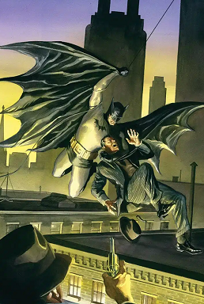

Batman is a fictional superhero appearing in American comic books published by DC Comics. The character was created by artist Bob Kane and writer Bill Finger, and first appeared in Detective Comics #27 (May 1939). Originally named
"Criminals are a superstitious cowardly lot. So my disguise must be able to strike terror into their hearts. I must be a creature of the night, black, terrible... a . a... a bat! That's it! It's an omen. I shall become a bat!" ―Bruce Wayne
Batman's secret identity is Bruce Wayne, a wealthy American playboy, philanthropist, and owner of Wayne Enterprises. When not fighting crime, he devotes his time and immense wealth to philanthropy, with the help of various supporting characters, including his butler Alfred Pennyworth, his vigilante allies, and occasionally, his romantic interest, the former circus acrobat and current psychologist, Selina Kyle.
Batman operates in the fictional Gotham City, with assistance from various supporting characters, including his butler Alfred, police commissioner Jim Gordon, and vigilante allies such as Robin. Unlike most superheroes, he does not possess any superpowers; rather, he relies on his genius intellect, physical prowess, martial arts abilities, detective skills, science and technology, vast wealth, intimidation, and indomitable will. A large assortment of villains make up Batman's rogues gallery, including his archenemy, the Joker.
Batman became popular soon after his introduction in 1939 and gained his own comic book title, Batman, the following year. As the decades went on, differing interpretations of the character emerged. The late 1960s Batman television series used a camp aesthetic, which continued to be associated with the character for years after the show ended. Various creators worked to return the character to his dark roots, culminating in 1986 with The Dark Knight Returns by Frank Miller. The success of Warner Bros.' live-action Batman feature films have helped maintain the public's interest in the character. The character has also intrigued psychiatrists, with trying to understand the character's psyche. Batman has been licensed and adapted into a variety of media, from radio to television and film, and appears on a variety of merchandise sold around the world, such as toys and video games. The character has also intrigued psychiatrists, with trying to understand the character's psyche. Batman has been licensed and adapted into a variety of media, from radio to television and film, and appears on a variety of merchandise sold around the world, such as toys and video games.
Batman has been depicted in various media since his inception. The character's popularity has resulted in the creation of various spin-off media, including films, television series, and video games. The character has also been the subject of various adaptations, including a comic book sequel, Batman: The Animated Series, and a live-action television series, Batman, which ran from 1966 to 1968. The character has also been the subject of various adaptations, including a comic book sequel, Batman: The Animated Series, and a live-action television series, Batman, which ran from 1966 to 1968.
Co-created by artist Bob Kane and writer Bill Finger, Batman made his first appearance in Detective Comics #27 (May, 1939). He quickly became a popular character soon after his introduction, and eventually gained his own comic publication a year after his debut. As the decades wore on, differing takes on the character emerged. The late 1960s Batman television series utilized a camp aesthetic associated with the character for years after the show ended. Various creators worked to return the character to his dark roots, culminating in Frank Miller's 1986 Dark Knight series. It and the success of director Tim Burton's 1989 Batman motion picture helped reignite popular interest in the character. A cultural icon, Batman is often considered one of the most well-known and popular superheroes of all-time. He has been licensed and adapted into a variety of media ranging from live-action television and film, various forms of animation, and video games.